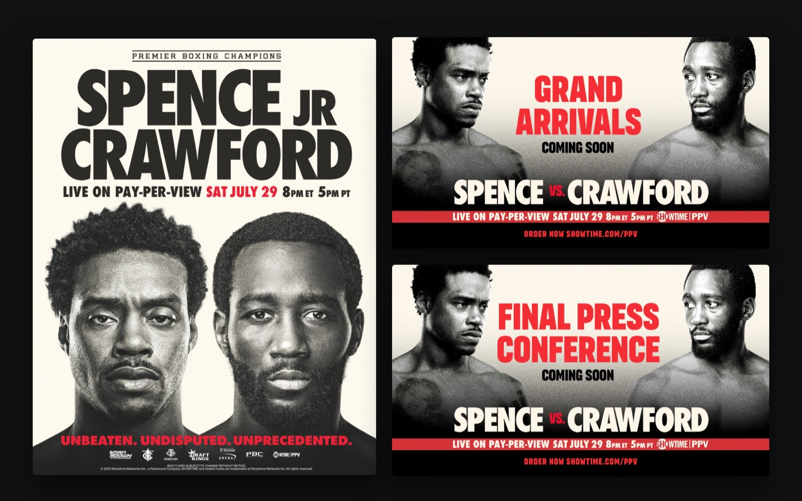
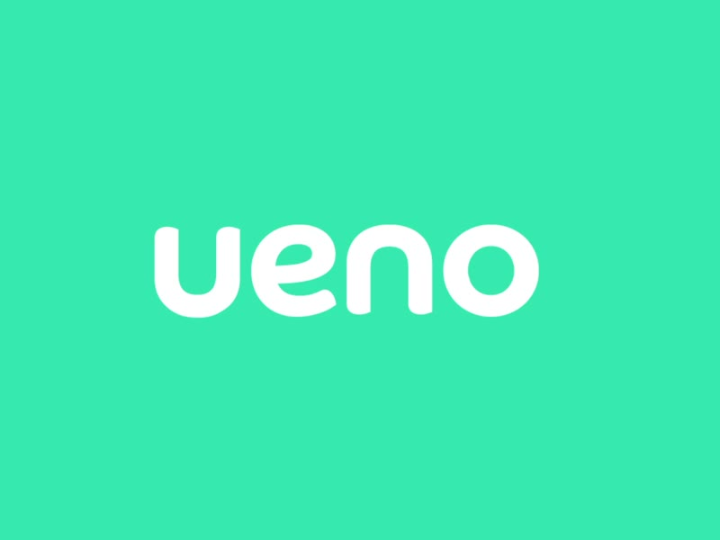
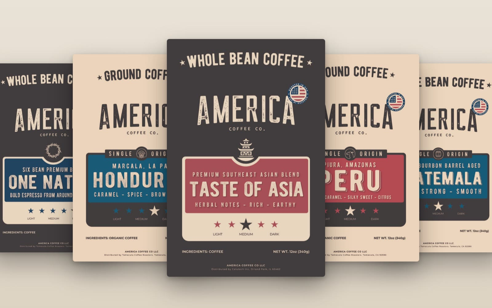
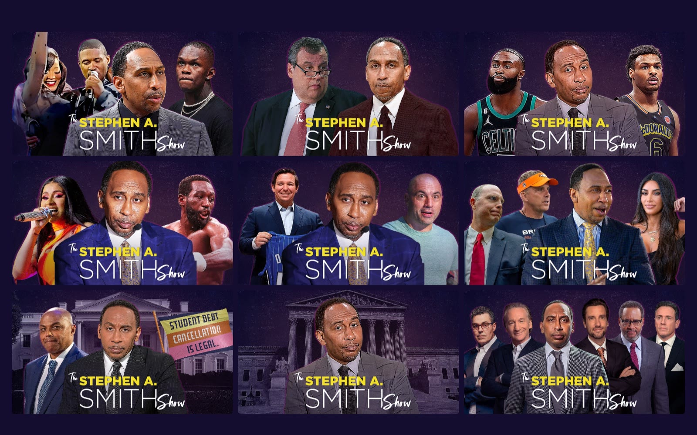

Brands that hold together on the shelf, on screen and on the street.
Thirteen years of identity, packaging, campaign and broadcast design in the U.S. and Latin America. I do my best work inside a brand, at volume: a pay-per-view campaign in every format, a bank’s launch across 18 billboard sizes, a 44-SKU coffee line.
Open to full-time roles, hybrid or remote. U.S. permanent resident, no sponsorship needed.

Brand work
Campaign, broadcast, launch and packaging
A pay-per-view campaign system, from countdown to fight night.
View project →
Launching a digital bank across screens, cards and billboards.
View project →
A label system that lets 22 designs cover 44 SKUs.
View project →
One weekly package, a new guest cast every episode.
View project →01 · Read the brand first
On Showtime I worked from what the network had already published, and put the invention into structure and pacing rather than new styles.
02 · Design the system, then the piece
22 label designs cover 44 SKUs. Win and loss templates exist before fight night. The system does the repetitive work so the craft goes where it shows.
03 · Own it to production
Production files for every SKU, billboards in 18 sizes, walls measured on site. I’m accountable for how it looks in the world, not just in the file.
About me
Packaging and 3D renders early on, then brand systems and national campaigns at agencies in Asunción. After that came two years as senior designer at ueno Bank, then broadcast design in California at Malka Media. Now I design and ship websites end to end, and I still do the brand work.
That path wasn’t a detour. Industrial design taught me to work inside real constraints. A master’s in art direction taught me to hold a whole system in view at once. Campaign work taught me to make something land in three seconds.
I work in English and Spanish, and most of my career has meant translating between markets as much as between languages.
What I do
Looking for a designer who keeps the brand right at volume?
Austin, Texas · hybrid or remote · full-time · English & Español. I reply the same day.